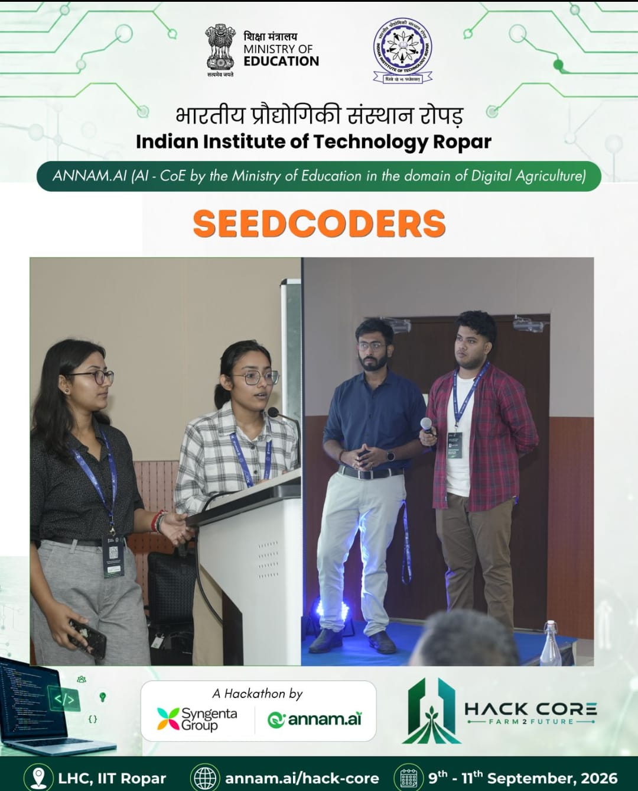

01 · AGRICULTURE / AI
AgroVani
HACKCORE 2026 WINNERWhat if crop residue became a resource instead of being burned?
AgroVani connects farmers with residue buyers and brings crop decision support into one platform. As team lead, I worked on the Crop Cam plant-disease pipeline, integrations with Syngenta and CEHub agricultural APIs, and Gemini-powered voice advisory.
- Built/integrated an image-based plant disease prediction flow.
- Connected external agricultural data and advisory APIs.
- Helped shape a farmer-focused product during a 36-hour hackathon.

AGROVANI IN ACTIONAdd a demo, pitch, or team photo
assets/agrovani-demo.jpg